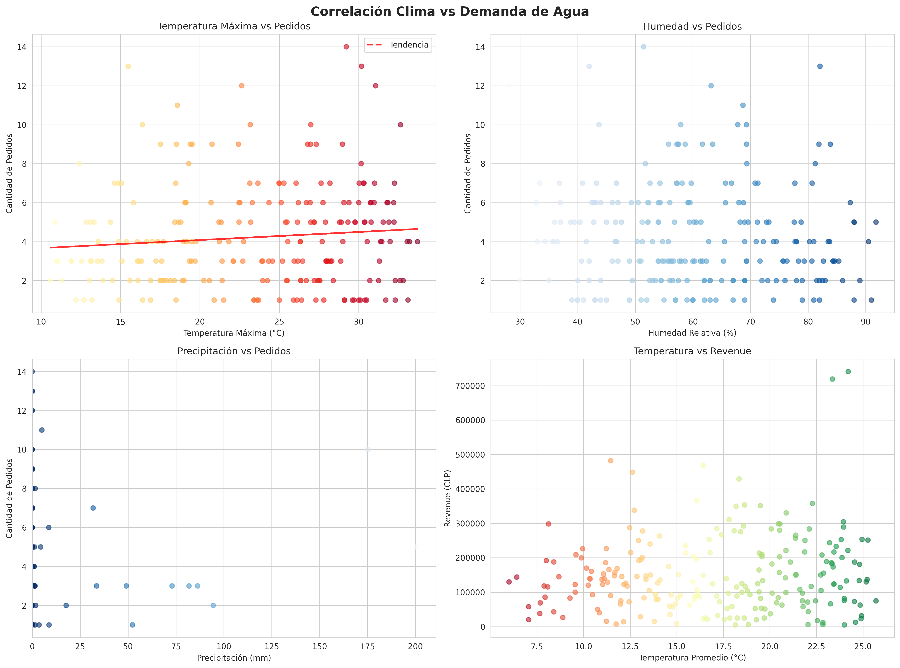
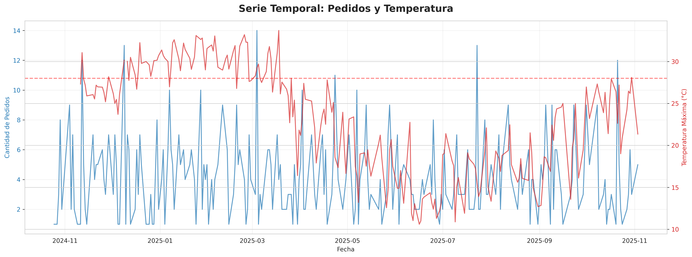
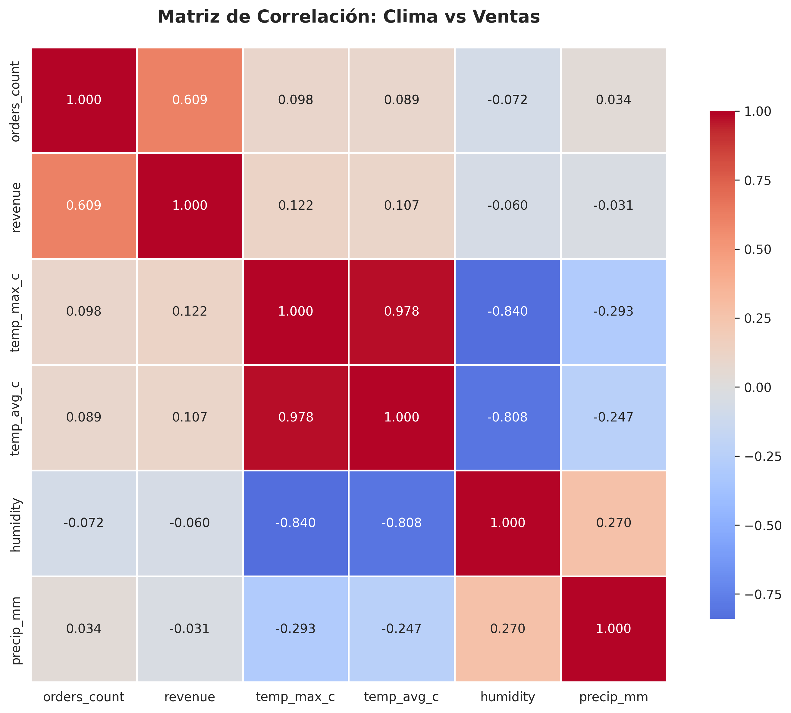

🌤️ Análisis de Correlación Clima vs Ventas
Fecha: 2025-11-10 18:02
Sistema: ML Agua Tres Torres
📊 Métricas Generales
📈 Coeficientes de Correlación (Pearson)
| Variable Climática |
Correlación con Pedidos |
P-valor |
Correlación con Revenue |
P-valor |
| Temp Max C |
0.094 |
0.1472 |
0.120 |
0.0639 |
| Temp Avg C |
0.086 |
0.1850 |
0.105 |
0.1060 |
| Humidity |
-0.070 |
0.2832 |
-0.059 |
0.3654 |
| Precip Mm |
0.034 |
0.6020 |
-0.031 |
0.6369 |
Nota: P-valor < 0.05 indica correlación estadísticamente significativa
📊 Gráficos de Análisis

💡 Conclusiones
- Las correlaciones muestran la relación entre variables climáticas y demanda de agua.
- Valores positivos indican que a mayor temperatura/humedad, mayor demanda.
- Valores negativos indican que a mayor precipitación, menor demanda.
- P-valores < 0.05 indican que la correlación es estadísticamente significativa.
Generado automáticamente por el Sistema ML Agua Tres Torres